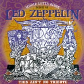
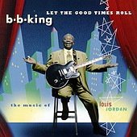
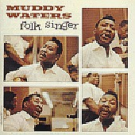

Теперь MCA готовит издание CD c песнями, прозвучавшими в этом мюзикле. Впервые за свою королевскую карьеру БиБи Кинг записал "Hoochie Coochie Man" специального для этого альбома. Другие треки представляяют блюзовые стандарты в исполнении Таджа Махала, Бадди Гая и Джонни Ланга. Госпелл исполнит хор Андре Кроуча (Andrae Crouch)- Компания пестрая, но нескучная. Комментарии для буклета к альбому Тадж Махал пишет с комедийной супер-звездой Вупи Голдберг.
"House of blues" уже выпустил несколько "нетрибьютов" (не путать из с "трибьютами" просит сама фирма) - то есть альбомов, в которых блюзмэны исполняют песни всяких популярных артистов, вроде бы тоже имющих какое-то отношение к блюзу. Наиизвестнейшим из подобных проектов был "Paint It, Blue": на песни "Роллинг Стоунз", как может догадаться каждый. кто лет 35 тому назад оттягивался под новейший тогда эстрадный хит "Paint It Blue". Но в том альбоме хотя бы все песни были действительно сочинения Джеггера и Ричардса. В новом "нетрибьюте", посвященном "Лед Зеппелин", звучит несколько старых блюзов, который "Лед Зеппелин" в конце 60-х перерабатывали в "хеви". Предложение записать для этого альбома блюз Уилли Диксона "I Can't Quit You Baby" Отис Раш мог воспринимать не иначе, как кривую ухмылку судьбы. В альбоме звучит так же голос и гитара блюзового патриарха, ученика Роберта Джонсона - Роберта-мл. Локвуда. В целом программа выглядит следующим образом:
 |
01. Custard Pie - Eric Gales MPEG Sample 02. Custard Pie (revisted) - Matt Tutor, Eric Gales Derek Trucks MPEG Sample 03. Heartbreaker - Alvin "Youngblood" Hart MPEG Sample 04. I Can't Quit You Baby - Otis Rush/Eric Gales MPEG Sample 05. When The Levee Breaks (part 1) - Magic Slim/Billy Branch/James Cotton MPEG Sample 06. When The Levee Breaks (part 2) - Magic Slim/James Cotton 07. Hey, Hey (What Can I Do) - Chris Thomas King 08. Rock 'N' Roll - Clarence "Gatemouth" Brown 09. You Need Love - Joe Louis Wlaker/James Cotton 10. Since I've Been Loving You - Otis Clay 11. Good Times, Bad Times - Carl Weathersby 12. Bring It On Home (part 1) - Robert Lockwood Jr. 13. Bring It On Home (part 2) - Robert Lockwood Jr. 14. Trampled Underfoot - Eric Gales |
 |
Король блюза выпустил великолепный альбом, посвященный блистательному свингу Луи Джордона - с любовью. Этим любовным отношением к каждой песне в альбоме дышит все; а каждая нота сыграна мастерски. С виртуозной легкостью играется неотразимый свинг. В оркестре БиБи Кинга играют пианист Доктор Джон, барабанщик Ирл Палмер (Earl Palmer) и саксофонист Дейв "Фэтхэд" Ньюман (Dave "Fathead" Newman). |
 |
Переиздание легендарного
альбома было долгожданным для любителей
блюзовой классики. По легенде Леонард
Чесс предложил Мадди Уотерсу съездить
на родину, в Дельту Миссиссиппи, и
привезьти "блюзовых дедов,
исполняющий "народный блюз", на
который "западают студентики".
Мадди сказал, что знает одного такого
деда и в Чикаго, и назначил запись на
следующий день. И записал акустичекий
альбом с помощью бассиста Уилли Диксона,
барабаншщика Клифтона Джеймса и второго
гитариста - непозволительно молодого в
этой компании - Бадди Гая.
RA Country Boy Оригинальный короткий альбом в нынешнем CD-издании дополнен 5 песнями, ближайшими по времени записи к сессии "Folk Singer". Среди них и редко издававшаяся вариация Уилли Диксона на собственный хит "Hoochie Coochie Man": |
Бывшие новости |
Январь-Февраль 1999 |
Март 1999 |
Ноябрь-Декабрь 1999
Январь 2000 |
Февраль 2000 |
Март 2000 |
Апрель 2000